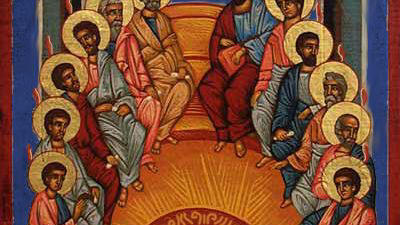
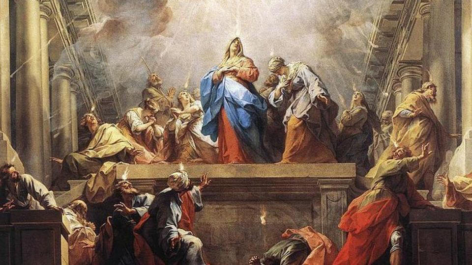
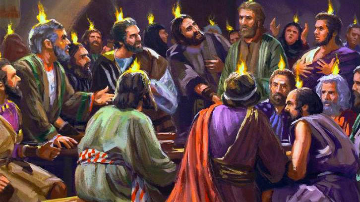

有時，聖靈的能力甚至叫我們能成就一些絕對不可能的事情──完全沒有受過教育的猶太信徒竟能用他們從沒有學過的外國話去傳福音；胸無點墨的漁夫彼得第一次傳福音時，即有三千人悔改得救；從未受過教育的門徒竟能寫出無誤而優美的聖經；對廣東話一竅不通的美國宣教士宋和樂牧師（Rev.
Harold
Shock，香港互愛團契團牧）竟能叫不諳英語，只念過三年小學的黑社會頭子、監獄常客、吸毒逾十年，甚至法官亦覺無希望的不受歡迎人物改變成為傳道人。聖經說：「不是倚靠勢力，不是倚靠才能，乃是倚靠我的靈，方能成事。」（亞四6）
3.F.E. Marsh. Emblems of the Holy Spirit, pp.47-56.
註釋
1.筆者譯自希臘文聖經（UBS版）。
2.參J.H. Thayer, Greek-English Lexion of the New Testament, p.75。對arrabon之解釋為'Money
which in purchases is given as a pledge that the full amount will subsequently
be paid.'。
3.參L.S. Chafer, Systematic Theology, vol. VI, p. 47。
On the last and greatest day of the festival, Jesus stood and said in a loud
voice, “Let anyone who is thirsty come to me and drink.Whoever believes in me,
as Scripture has said, rivers of living water will flow from within them.”By
this he meant the Spirit, whom those who believed in him were later to receive.
Up to that time the Spirit had not been given, since Jesus had not yet been
glorified. – John 7:37-39 Rivers, like water symbolize refreshing. But Rivers are unique in that
they are constantly flowing (and can overflow!), full of fresh water (full of
life), and flourish/prosper their natural surroundings. This is exactly what the
Holy Spirit does in our life!
“And afterward, I will pour out my Spirit on all people. Your sons and daughters
will prophesy, your old men will dream dreams, your young men will see visions.
Even on my servants, both men and women, I will pour out my Spirit in those
days. – Joel 2:28-29 Looking at water and rivers, you will know rain is very similar. Rain
like the Holy Spirit brings refreshing especially to dry and barren places. This
is why we connect it with revival and outpourings. Rain also means cleanings,
and growth.
Do not get drunk on wine, which leads to debauchery. Instead, be filled with the
Spirit, – Ephesians 5:18
The symbolism of the Holy Spirit as wine may sound odd and it doesn’t
actually have anything to do with alcohol. Wine symbolize the new covenant Jesus
have us when He died on the cross. And the Spirit’s infilling causes us to act
outside of our natural means into the supernatural. We see this in Acts 2:15-17
(Holy Spirit fell during Pentecost and the early church was operating in the
gift of tongues) when Peter stands up and declares these people are not drunk as
you suppose.
Learn More About The Holy Spirit
If you are hungry to learn more about the Holy Spirit than I encourage you to
check out my other articles on the Holy Spirit. I even have posts on the 9 gifts
of the Holy Spirit.
INTRODUCTION & INDEX
The 7 Spirits of God
Charles Pinkney
The seven Spirits of God are spoken of in the Book of Revelation as going
forth through all the earth to affect God's purposes: Throughout scripture
there are various references to specific "spirits" sent by God to impact or
anoint people.
Some writers have focused on the messianic text of Isaiah 11as the key to
the 7 Spirits taken from one single location: (Isaiah 11:2)
The Spirit of the Lord shall rest upon Him, The Spirit of wisdom and
understanding, The Spirit of counsel and might, The Spirit of knowledge and
of the fear of the Lord.
Although it is convenient and often presented as doctrine, to assume
this single text answers the identity of the seven spirits. I am not
thoroughly persuaded that these comprise the seven Spirits referred to in
Revelation.
There remain so many other references throughout the Bible that would seem
to contend for spiritual anointings of God. After studying the references, I
have compiled on my own list which I offer here.
Meanwhile, I will maintain an open mind toward this mystery until the day
comes that the Lord gives me perfect clarity about this question. In the
mean time, I do not think we should be dogmatic about an official list of
the seven spirits but share the wisdom and insights that seem to apply.
Seven Spiritual attributes or anointings
that express the character of God
In this light, let us reconsider the as yet unfulfilled Fall Feasts, with their
respective 2014 dates:
REPENTANCE September 25-26: Tishri 1
– Feast
of TRUMPETS (Yom Teru’ah) Awakening to Judgement (Rosh Hashanah). And so begins a 10-day period
(cf. Days of Awe) of prayer, self-examination, and repentance. Here’s a
thought: could this feast be considered the “Feast that No
one Knows the Day or the Hour“?
REDEMPTION October 4: Tishri 10 – Feast
of ATONEMENT (Yom Kippur) The Holiest Day of the year and provides prophetic insight regarding
the second coming of Massiach, the restoration of the nation of Israel, and
the final judgement of the world. What year will He return? Some say He
already has.
REJOICING October 9-15: Tishri
15-22 – Feast
of TABERNACLES (Sukkot) A seven-day celebration coinciding with the end of the four-species
harvest (Festival of Ingathering) and representing the time of restored
fellowship with the Lord.
In college, I had the pleasure of taking a sacraments course with Dr. Scott
Hahn, which was equal parts awe-inspiring and overwhelming. For starters, the
man is practically a living encyclopedia when it comes to the Catholic faith, so
notetaking in his class was basically like trying to drink water from a fire
hydrant.
Even though I’ve been a practicing Catholic all my life, I was shocked to
realize that there was so much about my Catholic faith that I didn’t know,
especially when it came to the Holy Spirit.
I did a little digging on the third person of the Trinity and came up with
seven names for the Holy Spirit that you may not have known either:
The key to remember is that the Holy Spirit is actively looking for a
relationship with you. If you don’t know how to invite Him into your life, start
by finding a quiet place (preferably in front of the tabernacle) and pray this
litany to the Holy Spirit. Be careful though. When you invite the Holy Spirit to
enter your life, He always comes in abundance.
1
The WIld Goose
This is a term that the Celts used for the Holy Spirit during ancient
times. They referred to Him by this name because they correctly understood
this “wild”, unpredictable nature of the Holy Spirit who always seems to
call us out of our comfort zone. Turns out there’s an entire
series dedicated to the Holy Spirit under this title.

2
Spiritual Unction
(1 John 2:20) This is a term used for the Holy Spirit by the apostle John
who is telling the early Christians that they are receiving the anointing
from the same Holy Spirit that anointed Jesus.
3
Consuming Fire
(Deuteronomy 4:24, Acts 2:3) This title is partly a throwback to the Old
Testament where God is referred to as a “consuming fire.” Later in the new
testament, St. Luke recounts how at pentecost the Apostles saw tongues of
fire descend and rest above each one of them. Either way, there’s a rich
tradition of the Holy Spirit being depicted with fire-related imagery.
Spirit of the Fear of the Lord
This title is given to the Holy Spirit because of his role of enabling us to
have a vivid understanding of God’s infinite power and greatness (a.k.a.
“Fear of the Lord).

5
Paraclete
(John 14:16, 26) This is the Greek term that translates into advocate or
counselor. When Christ left this earth he promised to send His advocate or
paraclete so that His followers would not be left alone. He is the
advocate for the entire mystical body of Christ. This title of the Holy
Spirit is used in the
Divine Praises, said during

6
Convictor of Sin
(John 16:7-11) In the Gospel according to St. John, Christ talks about how
He would send the Holy Spirit to convict men of their sinfulness. This
conviction of sin would then lead man to recognize his own need for God’s
mercy.
Prayer To The Holy Spirit By St. Augustine
Breathe in me O Holy Spirit, that my thoughts may all be holy. Act in me O Holy
Spirit, that my work, too, may be holy. Draw my heart O Holy Spirit, that I love
but what is holy. Strengthen me O Holy Spirit, to defend all that is holy.
1. Wisdom –
“But the wisdom from above is first pure, then peaceable, gentle, open to
reason, full of mercy and good fruits, impartial and sincere.” James 3:17
2. Understanding –
“Understanding is the reward of faith. Therefore, seek not to understand that
you may believe, but believe that you may understand.” – St. Augustine of Hippo
3. Knowledge –
“The gift of knowledge puts us in tune with God’s gaze on things and on people…”
– Pope Francis
4. Counsel –
“Let us employ the gift of reason for actions of prudence. Let us learn now
abstinence from what is wicked, that we may not be forced to learn in the
future. Let us employ life as a training school for what is good; and let us be
roused to the hatred of sin. Let us bear about a deep love for the Creator; let
us cleave to Him with our whole heart; let us not wickedly waste the substance
of reason, like the prodigal.” – St. Clement of Alexandria
5. Fortitude –
“Though the path is plain and smooth for men of good will, he who walks it will
not travel far, and will do so only with difficulty, if he does not have good
feet: that is, courage and a persevering spirit.” – St. John of the Cross
6. Piety–
“Be brave and try to detach your heart from worldly things. Do your utmost to
banish darkness from your mind and come to understand what true, selfless piety
is. Through confession, endeavor to purify your heart of anything which may
still taint it. Enliven your faith, which is essential to understand and achieve
piety.” – St. John Bosco
7. Fear
of the Lord – “We must fear God out of love, not love Him out of fear.”
– St. Francis de Sales
By ThoughtCo Updated April 17, 2019 The Catholic Church recognizes seven
gifts of the Holy Spirit; a listing of these gifts is found in Isaiah 11:2-3.
(Saint Paul writes of "manifestations of the Spirit" in 1 Corinthians 12:7-11,
and some Protestants use that list to come up with nine gifts of the Holy
Spirit, but these are not the same as the ones recognized by the Catholic
Church.)
The seven gifts of the Holy Spirit are present in their fullness in Jesus
Christ, but they are also found in all Christians who are in a state of grace.
We receive them when we are infused with sanctifying grace, the life of God
within us—as, for example, when we receive a sacrament worthily. We first
receive the seven gifts of the Holy Spirit in the Sacrament of Baptism; these
gifts are strengthened in the Sacrament of Confirmation, which is one of the
reasons why the Catholic Church teaches that confirmation is properly viewed as
the completion of baptism.
As the current Catechism of the Catholic Church (para. 1831) notes, the seven
gifts of the Holy Spirit "complete and perfect the virtues of those who receive
them." Infused with His gifts, we respond to the promptings of the Holy Spirit
as if by instinct, the way Christ Himself would.
Click on the name of each gift of the Holy Spirit for a longer discussion of
that gift.
01 of 07 Wisdom
Dove in flight, against blue background, close-up Adri Berger/Getty Images
Wisdom is the first and highest gift of the Holy Spirit because it is the
perfection of the theological virtue of faith. Through wisdom, we come to value
properly those things which we believe through faith. The truths of Christian
belief are more important than the things of this world, and wisdom helps us to
order our relationship to the created world properly, loving Creation for the
sake of God, rather than for its own sake.
02 of 07 Understanding
Happy senior couple studying the Bible aldomurillo/Getty Images
Understanding is the second gift of the Holy Spirit, and people sometimes
have a hard time understanding (no pun intended) how it differs from wisdom.
While wisdom is the desire to contemplate the things of God, understanding
allows us to grasp, at least in a limited way, the very essence of the truths of
the Catholic faith. Through understanding, we gain a certitude about our beliefs
that moves beyond faith.
03 of 07 Counsel
Pensive man at laptop in home office Astronaut Images/Getty Images
Counsel, the third gift of the Holy Spirit, is the perfection of the cardinal
virtue of prudence. Prudence can be practiced by anyone, but counsel is
supernatural. Through this gift of the Holy Spirit, we are able to judge how
best to act almost by intuition. Because of the gift of counsel, Christians need
not fear to stand up for the truths of the Faith, because the Holy Spirit will
guide us in defending those truths.
04 of 07 Fortitude
Mixed race woman's hands reaching toward sun Dave and Les Jacobs/Getty Images
While counsel is the perfection of a cardinal virtue, fortitude is both a
gift of the Holy Spirit and a cardinal virtue. Fortitude is ranked as the fourth
gift of the Holy Spirit because it gives us the strength to follow through on
the actions suggested by the gift of counsel. While fortitude is sometimes
called courage, it goes beyond what we normally think of as courage. Fortitude
is the virtue of the martyrs that allows them to suffer death rather than to
renounce the Christian Faith.
05 of 07 Knowledge
Holy Spirit Stained Glass Window A stained-glass window of the Holy Spirit
overlooking the high altar of Saint Peter's Basilica. Franco Origlia/Getty
Images
The fifth gift of the Holy Spirit, knowledge, is often confused with both
wisdom and understanding. Like wisdom, knowledge is the perfection of faith, but
whereas wisdom gives us the desire to judge all things according to the truths
of the Catholic Faith, knowledge is the actual ability to do so. Like counsel,
it is aimed at our actions in this life. In a limited way, knowledge allows us
to see the circumstances of our life the way that God sees them. Through this
gift of the Holy Spirit, we can determine God's purpose for our lives and live
them accordingly.
06 of 07 Piety
Man Kneeling and Praying in Church FangXiaNuo/Getty Images
Piety, the sixth gift of the Holy Spirit, is the perfection of the virtue of
religion. While we tend to think of religion today as the external elements of
our faith, it really means the willingness to worship and to serve God. Piety
takes that willingness beyond a sense of duty so that we desire to worship God
and to serve Him out of love, the way that we desire to honor our parents and do
what they wish.
07 of 07 Fear of the Lord
man praying in church RyanJLane / Getty Images
The seventh and final gift of the Holy Spirit is the fear of the Lord, and
perhaps no other gift of the Holy Spirit is so misunderstood. We think of fear
and hope as opposites, but the fear of the Lord confirms the theological virtue
of hope. This gift of the Holy Spirit gives us the desire not to offend God, as
well as the certainty that God will supply us the grace that we need in order to
keep from offending Him. Our desire not to offend God is more than simply a
sense of duty; like piety, the fear of the Lord arises out of love.
This post may contain affiliate links. Please see my disclosure
policy for details
We will answer the question what are the gifts of the
Holy Spirit? and have an overview of the 25 spiritual gifts mentioned
throughout the New Testament.
If you are here you are probably wondering what are the
gifts of the Holy Spirit…
As a spirit filled Christian, I am familiar with the
gifts of the Holy Spirit. But I was pleasantly surprised and blessed
when I decided to get into the Bible and study on them.
And my hope and prayer is that this post encourages and
blesses you as well. Because there are so many gifts in the Bible I
thought having a table content might make things a little easier for you
to navigate through.
Feel free to click on the topics you want to read about
or you can scroll through this post like normal. I highly recommend you
check it all out as it’s amazing how many gifts the Holy Spirit has!
This post may contain affiliate links. Please see my disclosure
policy for details.
In
this article we will enjoy a wonderful Bible study on the
names of the Holy Spirit and their meaning. I encourage
you to grab your Bible and join me in discovering the Holy
Spirit’s names…
Out of the Trinity the Holy Spirit seems to
be the most clouded in mystery. We see him weave
throughout Scripture and as a Christian we have
experienced his touch and presence in our lives. And it’s
easy to leave it at that.
But there is so much more we can learn
about the Holy Spirit if we wouldn’t only dig into the
word and spend time with him. I have written a few posts
on the Holy Spirit already, which you can check out below.